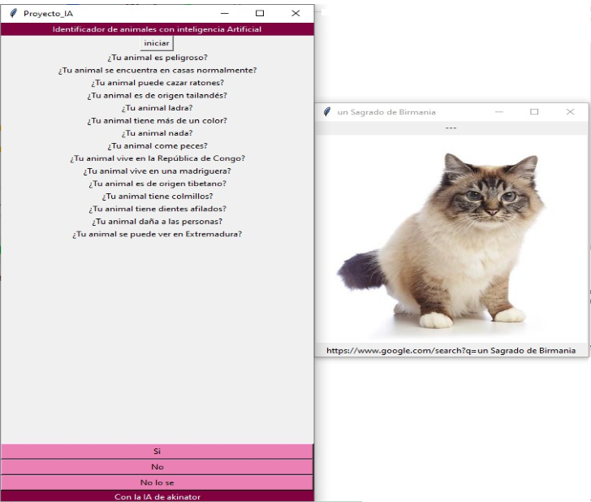

Adivinador de animales.
Mediante el consumo de la API de akinator, se efectua una serie de preguntas para saber en que animal se esta pensando. Una vez que se efectue tal, se mostrará una imagen del animal y permitirá ir a google para mas información.